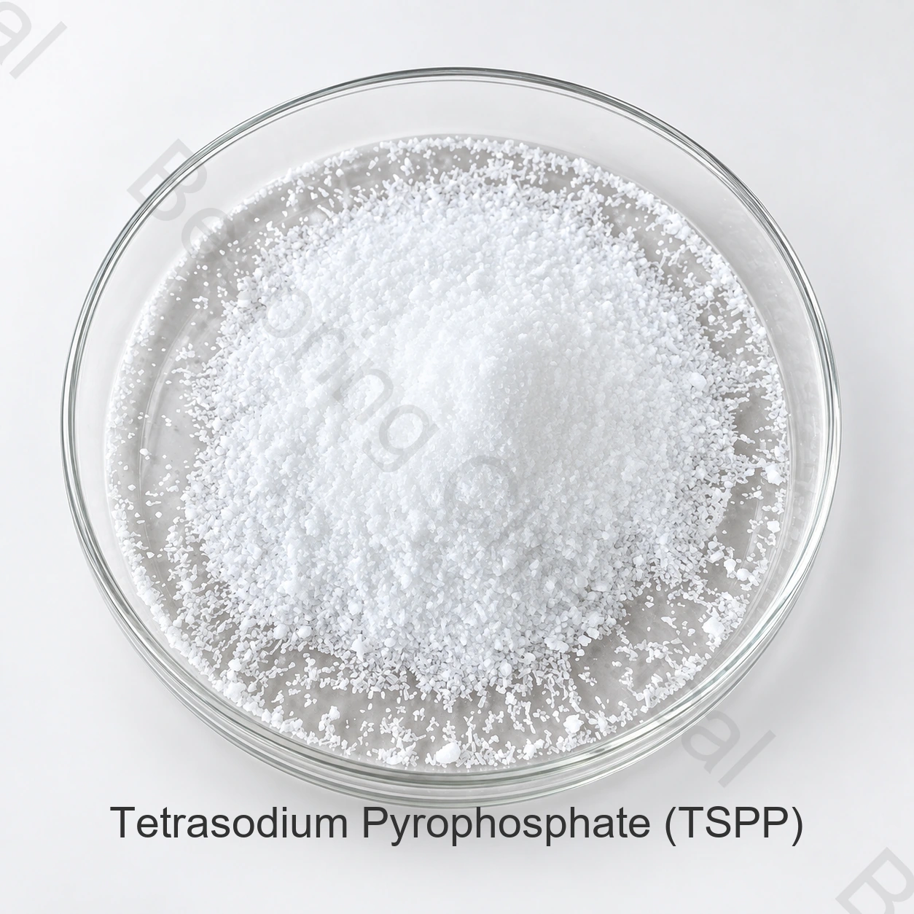

Эмульгирование и буферизация
JECFA описывает функции эмульгатора и буферизации. TSPP может влиять на рН, поведение белка и стабильность эмульсии.
Фосфат пищевого качества · Дифосфат натрия · INS 450(iii)
Пирофосфат тетранатрия представляет собой щелочный, водорастворимый дифосфат натрия, используемый в отдельных пищевых системах для эмульгирования, буферизации, секвестрации и регулирования влаги.

Кратко о продукте
Пирофосфат тетранатрия (TSPP), или дифосфат тетранатрия, — пищевой фосфат INS 450(iii), CAS 7722-88-5. Безводная формула — Na4P2O7; декагидрат имеет формулу Na4P2O7·10H2O. Водную форму и базис содержания указывают в спецификации.
Коммерческие показатели, требования стандарта и результаты партии оценивают отдельно. Условия применения зависят от готового продукта и рынка.
Функциональные роли
Эффективность зависит от сорта, дозировки, состава, условий процесса и применимых правил питания.
JECFA описывает функции эмульгатора и буферизации. TSPP может влиять на рН, поведение белка и стабильность эмульсии.
TSPP может связывать выбранные ионы металлов и используется в подходящих молочных, мясных, сырных и напитков составах.
Области применения
Это области предварительной оценки применений, а не универсальные разрешения на использование или гарантированные результаты.
Оцените удержание воды, связывание, выход, текстуру и фосфатный баланс в фактической системе белка и соли.
Может поддерживать эмульгацию, минеральный баланс, расплав и текстуру при использовании в квалифицированной эмульгирующей соляной системе.
Буферизация экрана, управление водой и белковые взаимодействия в полной рецептуре.
Оценка pH, ясности, вкуса и минеральной совместимости перед коммерческим использованием.
Подтверждают протекание, последовательность растворения и совместимость с кислотами, белками и другими минеральными солями.
TSPP может быть смешан с другими разрешенными фосфатами после оценки свойств и допустимых условий применения.
Коммерческие справочные показатели
Приведены коммерческие справочные показатели. Критерии приёмки определяют согласованная спецификация, методы испытаний и COA партии.
| Показатель | Единица | Спецификация |
|---|---|---|
| Содержание пирофосфата тетранатрия | % | 96.5–100.5 |
| P2O5 | % | 52.5–54 |
| Потери при высушивании | % | ≤0.5 |
| Нерастворимые вещества | % | ≤0.20 |
| pH раствора 10 г/л | — | 9.9–10.7 |
| Ортофосфат | — | Соответствует испытанию |
| Мышьяк (As) | % | ≤0.0003 |
| Тяжёлые металлы (в пересчёте на Pb) | % | ≤0.001 |
| Фтор (как F) | % | ≤0.005 |
| Свинец (Pb) | % | ≤0.0004 |
| Потери при прокаливании | % | ≤0.5 |
| Внешний вид | — | Белый порошок или гранулированный |
Водная форма и примеси: предел потерь ≤0.5% требует безводной формы и согласованного метода; декагидрат оценивают отдельно. Коммерческий предел фтора ≤0.005% соответствует 50 мг/кг, тогда как монография JECFA устанавливает ≤10 мг/кг. Для заказа по JECFA требуется согласованный более строгий предел и результат анализа партии. Общий показатель тяжёлых металлов не заменяет отдельный анализ свинца.
Поддержка квалификации
Запросить текущую спецификацию/TDS, SDS, методы испытаний и типовой или COA на партию.
Запросить применимые документы HACCP, Kosher, Halal и ISO; проверить продукт, сайт, объем и действительность.
Обзор монография ФАО/ВОЗ JECFA tetrasodium pyrophosphate контекст идентичности.
Хранение и обращение
Вопросы покупателя
Пирофосфат тетранатрия является щелочным, водорастворимым дифосфатом натрия, используемым в отдельных пищевых системах для эмульгирования, буферизации, секвестрации и регулирования влаги. Проверьте допустимые условия применения и эффективность для точного применения.
В коммерческой спецификации указано 96,5–100,5%. Для приемки используют текущую согласованную спецификацию и COA на партию.
Справочные условия: 25 кг в мешке, 20 MT на 20-футовый контейнер и минимальный заказ 500 кг.
Запросите спецификацию / TDS, SDS, COA и применимых документов HACCP, Kosher, Halal и ISO для выбранного продукта.
Предоставьте форму сорта или гидратации, заявку, спецификацию, количество, упаковку, место назначения, документы и дату доставки.
Связанные пищевые фосфаты
Сравните идентичность, спецификацию и назначение этой отдельной фосфатной соли.
Сравните идентичность, спецификацию и назначение этой отдельной фосфатной соли.
Сравните идентичность, спецификацию и назначение этой отдельной фосфатной соли.
Поставка по согласованной спецификации
Укажите применение, спецификацию, количество, упаковку, место назначения и необходимые документы.